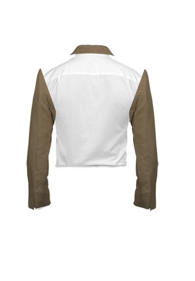
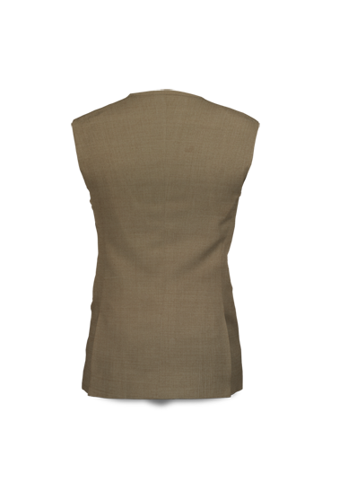

<div id="fabric_design_details_middle_picture_view1" class=""> 
	<!--//-----------------------------------------------inner main merged image for back---------------------------------------------//--> 
	 
	 

</div>


